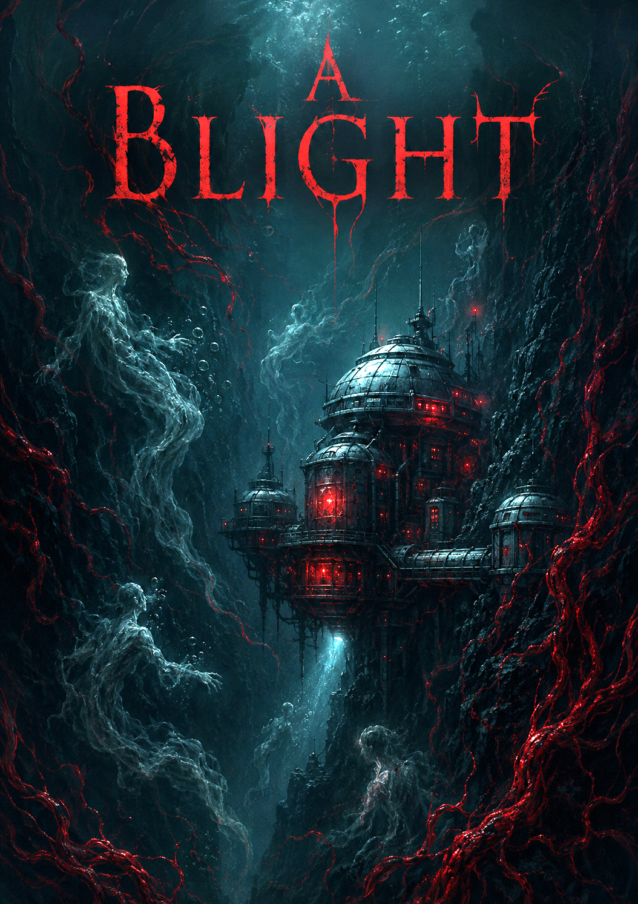

Summary
Ronjaree aka RJ, Edwin aka Eddie, and Allayane have all found themselves wondering into the same place after a journey across Nocctherra for many different reasons. They all get to the muddy mess of the shabby Town of Ashmaw.
A place where there isn't much to see except for the desolate dark mud that now cakes their boots and pants. The Hideaway Tavern is the only warm glimmering part of their introduction to the sorry excuse for a town.
And so they all find themselves inside the warm Tavern looking for food and drink and perhaps some lodging. A sweet lady bartender finds them all at the same table and asks, "What'll it be?" The orders are fast. RJ wants
porridge and ale. Eddie ale and porridge. And Allayane, well, he wants mead and warm bread, plus a little more if you please. The bartender gives him a wink and when she walks back gives Allayane a bit of a show.
While they are waiting, complete strangers a woman bursts through the Tavern doors. Her eyes aglaze with a fire in looking for something. She scans until her eyes set upon the three newcomers. She just got words some adventurers
had made their way into town. So she beelines it too their table and sits staring them all down. "Are you all looking for work? Your adventurers right?" They learn the woman's name is Cressida Ursolo, a neighborring terraforming and
mining rig Captain in her own rite. She relays the distress call from her husband.
Captain's Distress Log
She relays offering 3,000GP for the investigation into the disappearance of her husband and his crew. The adventurers agree and go with Cressida to get more information and suit up. Cressida provides the team
with mining dive suits that deal with the pressure and environment down below. She also provides each adventurer with a crew patch that will allow them access to the station and the ability to talk with Cadence, the
rig computer. Ronjaree tries to convince Cressida to offer them more money for this task, however Cressida replies that the 3,000 GP is their life savings and all she has to offer. She adds that if they succeed, whenever
they come through Ashmaw, they will have room and board and all expenses covered for their stay plus some goodies from the Crevasse. This seems to satisfy RJ and the rest of the team. They dawn their suits and Allayane
asks if the suits come in a more fashionable color. Cressida confused let's them know that the station is at 600 ft. They will go down in a roundabout area of where the station is located.
Upon walking them to the edge of the Crevasse, there is a rickety old elevator that will transport them down to the dive elevator. Cressida bids them adue and they begin the descent into the Crevasse. Eddie leans over the
side making the entire platform tilt. The suits are heavy and thick which makes walking an exercise. Once at the edge of the water Eddie discovers the red and orange flakes that suggests some volcanic activity down below along
with other minerals in the water from the mines. They then attach to the dive elevator with weights on at full speed ahead. Eddie figures out how to slow their descent and how to read the beacon that they have to navigate.
They get stopped at 600 ft and begin to catch their bearings. Navigating down here is a crap shoot even with Allayane's Darkvision. The begin to move eastly and a signal begins to chime. They investigate further and are able to make
out Alpha station from the red emergency lights. The HQ is completely dark on the inside as they make their way to the airlock. Once inside and as the water retracts, they get out of the big dive suits to explore the station.
In the HQ, they discover Cami Ruther, the Cheif Engineer that Cressida mentioned getting in touch with. Cami is unconscious in the oxygen filtration room with an oval shaped rigging aparatus. Allayane is able to stabilize Cami
but unable to wake her. Eddie finds the original dive log in some papers strewn across the floor.
They then begin to investigate the rest of the station including Dive Command where all Dive Suits have been launched and there is only 1 functioning Escape Pod. One dive suit remains in good condition in the dive command along
with 34 oxygen tanks. Cadence is sure to tell the team that the oxygen is declining consistently as there is no power to the station. He also relays Cami's Crew Profile and her recorded Introduction video for the adventurer's.
Cami Profile
Eddie takes a look farther into the station discovering a connection to Bravo Station. The hallway connector is damaged and water is trickling in, but the disturbing part is a red, vein like mesh that has begin to make its way into the station. RJ and Allayane check out Medical Bay finding many of Sophie's Notes, Sophie's Recordings, and two of the crew that have been afflicted by this mysterious creature. Norman and Marion are in stasis chambers and it seems that the doctor on board was trying to cure them of the infection and was getting closer, but unsuccessful to that point.
Sophie's Plea
Sophie's Findings
Eddie takes a look at the mess hall and notices that whatever happened here, happened fast. Then moves on to look at the Research Lab. There he finds two large eggs, one that is complete and one that has been dissected. There is also a device in the room that is the Resonance Engine built by Sophie Bouchard, the doctor, and Cami Ruther, the Chief Engineer. After finding some more notes and the operations guide, the adventurers begin trying to figure out how the machine works. They tend to Cami and get her to medical and provide her with a Floatation Serum. Then they move both Marion and Norman into the Research Lab and begin setting up the calibrations for utilizing the Resonance Engine. After a little bit of thought and scouring Sophie's notes, they are able to get the machine to light up green and it looks ready to perform the procedure.
Key Events
- Accepted the quest from Cressida to locate her husband and his crew in the Ashmaw Crevasse.
- Discovered Alpha and Bravo stations.
- Got the Resonance Engine working.
- Learned about Cami Ruther, Marion Vargas, and Norman Haines.
Quotes of the Night
"I just don't know about this color, darling." — Allayane Jaquette on the Dive Suit
"Wait! I have your orders!" — Bartender Gal
"We should've asked for more money." - Ronjaree Jarred